Further Organic Mechanisms 1
Chapter H3.6 · Further Organic Mechanisms Part 1
On this page
Introduction
In H2 you met two mechanisms for the reactions of halogenoalkanes with nucleophiles (Topic 11.1 Part 3), saw what they do to a chiral centre (Topic 11.5), and linked a mechanism to its rate equation (Topic 8). This Part asks why:
- what does a transition state look like, and how can we guess its structure? (the Hammond postulate)
- what decides how fast SN1 and SN2 go? (the nucleophile, the leaving group and the groups on the carbon)
- what does each mechanism do to a chiral centre, and why is SN1 not quite a 50 : 50 affair? (inversion, racemisation and ion pairs)
- how can we tell which mechanism is running, and what happens when both run at once?
Part 2 asks the same questions about elimination. Throughout, configurations are named with R and S and the Cahn–Ingold–Prelog (CIP) priority rules (H3.5 Part 2), and an excess of one enantiomer is measured by the enantiomeric excess (ee) of H3.5 Part 2.
Key terms
You will use these terms throughout the chapter.
| Term | Meaning |
|---|---|
| Transition state (‡) | The highest-energy arrangement of atoms on the path between two stable species. Bonds are partly made and partly broken; it cannot be isolated. |
| Intermediate | A species at an energy minimum between two steps, e.g. a carbocation. Short-lived, but a real species. |
| Hammond postulate | A transition state resembles the stable species (reactant, intermediate or product) that is nearest to it in energy. |
| Early / late transition state | Early: close to the reactants along the reaction path and similar to them (exothermic step). Late: close to the products (endothermic step). |
| Substrate | The organic compound that is attacked, here the halogenoalkane, RX. |
| Nucleophile, Nu−; nucleophilicity | A species that donates a lone pair to a carbon atom. Nucleophilicity is about rate: how fast it attacks carbon. |
| Base; basicity | A species that donates a lone pair to H+. Basicity is about the position of an equilibrium (Topic 10). |
| Leaving group | The atom or group that leaves with the bonding pair of electrons, e.g. Br−. |
| SN1 and SN2 | Substitution, nucleophilic, unimolecular (one species in the rate-determining step) and bimolecular (two species). |
| Rate-determining step | The slowest step of a mechanism; it sets the overall rate. |
| Steady-state approximation | The concentration of a reactive intermediate stays very small and almost constant, because it is used up as fast as it is formed. |
| Inductive effect | Alkyl groups push electron density through the σ bonds towards a positive carbon. |
| Hyperconjugation | A filled C–H (or C–C) σ bond on a neighbouring carbon overlaps sideways with the empty p orbital of a carbocation and spreads the positive charge. |
| Steric hindrance | Bulky groups get in the way of an approaching nucleophile. |
| Inversion of configuration | The three other groups on the carbon are turned inside out, like an umbrella in the wind. |
| Racemisation | Formation of equal amounts of two enantiomers (a racemic mixture, or racemate) from one enantiomer. |
| Ion pair | A carbocation and the leaving-group anion still next to each other, just after the C–X bond has broken. |
The Hammond postulate
We can measure the energies of reactants, intermediates and products, and the height of a barrier from a rate. But a transition state lasts about as long as one molecular vibration, so we can never isolate it or take its spectrum. How can we say anything about its structure? In 1955 George Hammond suggested a simple rule.
Why should this be? Two arrangements of the same atoms on the same reaction path that are close in energy can differ only a little in structure: a big change in structure, such as stretching a bond a long way, costs a lot of energy. The transition state is the top of the hill, so it is always closest in energy to the species on the higher side of the hill. Fig 1 shows the three cases.
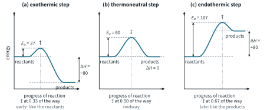
- (a) Exothermic step (ΔH = −80 kJ mol−1): Ea is only 27 kJ mol−1 and the transition state is about a third of the way along. Bonds have hardly started to change: early, like the reactants.
- (b) Thermoneutral step (ΔH = 0): the transition state is midway, halfway between reactants and products in structure too.
- (c) Endothermic step (ΔH = +80 kJ mol−1): Ea = 107 kJ mol−1, and the transition state is two thirds of the way along. The bonds have almost finished changing: late, like the products.
The useful consequence is about what changes a rate:
You have already used this idea without its name. In Topic 11.4 Part 1, Markovnikov's rule was explained by saying "a more stable carbocation is formed through a lower-energy transition state". Making a carbocation is uphill, so its transition state is late and carbocation-like: that sentence is the Hammond postulate at work. We will use it again for the SN1 rate (this Part), and for E1 and for Zaitsev's rule (Part 2).
Worked example 1: the Hammond postulate and SN1
The first step of the SN1 hydrolysis of 2-bromo-2-methylpropane, (CH3)3CBr → (CH3)3C+ + Br−, is endothermic. (a) Describe its transition state. (b) Explain why 2-bromo-2-methylpropane ionises about 105 times faster than 2-bromopropane.
(To answer part (a), you have to decide which stable species is nearest in energy to the transition state.) The step is strongly uphill (+85 kJ mol−1 in the illustrative profile of Fig 4), so the transition state is close in energy to the products of the step, the carbocation and Br−. It is late and carbocation-like: the C–Br bond is mostly broken, the carbon is nearly planar and the positive charge is mostly developed on it. We can write it as [(CH3)3Cδ+···Brδ−]‡.
(To answer part (b), you have to compare the two carbocations.) Whatever stabilises the carbocation also stabilises this late transition state and lowers Ea. The tertiary cation (CH3)3C+ has three alkyl groups pushing electron density towards C+ (inductive effect) and nine C–H bonds that can share their electrons with it (hyperconjugation, see "Substituent effects" below); the secondary cation (CH3)2CH+ has two alkyl groups and six such C–H bonds. From the relative rates of solvolysis (literature values, see "Substituent effects"), the ratio is
1.2 × 106 / 12 = 1.0 × 105
Nucleophilic substitution: the two mechanisms again
Here are the two mechanisms of Topic 11.1 Part 3 again, now with the transition states drawn in full. Read every curly arrow: it starts at a pair of electrons and ends where they go.
SN2: one step
Bromoethane with hydroxide ions (Fig 2): arrow 1 goes from a lone pair on the O of OH− to the δ+ carbon, approaching from the side opposite the Br; arrow 2 goes from the C–Br bond to the Br. Both happen together, in one step.
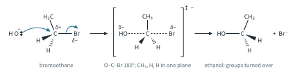
In the transition state (in square brackets, marked ‡) the carbon has five groups: the O–C and C–Br bonds are both partial (dashed), with O, C and Br in a straight line (180°), and the other three groups (CH3, H and H) lie in one plane at 120° to each other, at right angles to the O–C–Br line: a trigonal bipyramidal arrangement. The negative charge is shared between O and Br (δ− on each). As the reaction goes on, the three groups are pushed through to the other side, like an umbrella turning inside out. This inversion matters only when the carbon is a chiral centre (see "Stereochemistry: inversion, racemisation and ion pairs").
SN1: two steps
2-Bromo-2-methylpropane with hydroxide ions (Fig 3): in step 1 (slow) the C–Br bond breaks heterolytically, both electrons going to Br. The carbocation (CH3)3C+ is sp2, planar, with an empty p orbital above and below the plane. In step 2 (fast) a lone pair on OH− attacks the empty p orbital, from either face.1
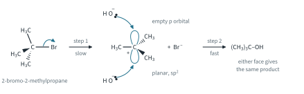
Energy profiles, rate laws and the steady state
Fig 4 compares the energy profiles of the two mechanisms. SN2 has one transition state and no intermediate. SN1 has two transition states with the carbocation intermediate in the dip between them; the first hump is the higher, so step 1 is the rate-determining step.
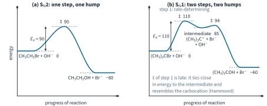
Notice the Hammond postulate in Fig 4(b): the first transition state (110) is close in energy to the intermediate (85) and far above the reactants (0), so it is late and resembles the carbocation. The second transition state (94) is only 9 kJ mol−1 above the intermediate: carbocations react very quickly.
The rate equations follow from the rate-determining step (Topic 8):
- SN2: both the halogenoalkane and the nucleophile are in the only step, so rate = k[RBr][OH−]: first order with respect to each, second order overall, bimolecular; k in mol−1 dm3 s−1.
- SN1: only the halogenoalkane is in the slow step, so rate = k[RBr]: first order with respect to RBr, zero order with respect to OH−, first order overall, unimolecular; k in s−1. Like every first-order reaction it has a constant half-life, t½ = 0.693/k (Topic 8).
Worked example 2: rate laws from initial rates
The two tables give initial rates for (a) bromoethane with OH− in a water–ethanol mixture at 55 °C and (b) 2-bromo-2-methylpropane with OH− in a water–propanone mixture at 25 °C (illustrative data). Halogenoalkanes do not dissolve well in water, so kinetics experiments use a mixed solvent; "H2O, warm" in tables and grids stands for conditions like these. For each, deduce the rate equation and the mechanism, calculate k, and predict one rate.
| (a) Experiment | [CH3CH2Br] / mol dm−3 | [OH−] / mol dm−3 | initial rate / mol dm−3 s−1 |
|---|---|---|---|
| 1 | 0.050 | 0.10 | 8.5 × 10−6 |
| 2 | 0.10 | 0.10 | 1.7 × 10−5 |
| 3 | 0.10 | 0.20 | 3.4 × 10−5 |
(To answer, compare two experiments in which only one concentration changes.) From 1 to 2, [CH3CH2Br] doubles and the rate doubles: first order with respect to CH3CH2Br. From 2 to 3, [OH−] doubles and the rate doubles: first order with respect to OH−. So rate = k[CH3CH2Br][OH−], second order overall: SN2. From experiment 1,
k = 8.5 × 10−6 / (0.050 × 0.10) = 1.7 × 10−3 mol−1 dm3 s−1
and the rate when [CH3CH2Br] = 0.040 mol dm−3 and [OH−] = 0.15 mol dm−3 is
rate = 1.7 × 10−3 × 0.040 × 0.15 = 1.0 × 10−5 mol dm−3 s−1 (1.02 × 10−5 unrounded)
| (b) Experiment | [(CH3)3CBr] / mol dm−3 | [OH−] / mol dm−3 | initial rate / mol dm−3 s−1 |
|---|---|---|---|
| 1 | 0.010 | 0.050 | 3.0 × 10−6 |
| 2 | 0.020 | 0.050 | 6.0 × 10−6 |
| 3 | 0.020 | 0.100 | 6.0 × 10−6 |
From 1 to 2, [(CH3)3CBr] doubles and the rate doubles: first order. From 2 to 3, [OH−] doubles and the rate does not change: zero order with respect to OH−. So rate = k[(CH3)3CBr]: SN1.
k = 3.0 × 10−6 / 0.010 = 3.0 × 10−4 s−1
t½ = 0.693 / (3.0 × 10−4) = 2.31 × 103 s (about 39 min)
The half-life is the same whatever the starting concentration. At [(CH3)3CBr] = 0.040 mol dm−3 the rate is 3.0 × 10−4 × 0.040 = 1.2 × 10−5 mol dm−3 s−1, at any [OH−].
The carbocation: a steady state
Why does OH− not appear in the SN1 rate equation, even though it is used up? Look at the carbocation (Fig 5).
In Fig 5 the concentration of R+ has been multiplied by 1000 to make it visible. It rises almost at once to a tiny value, and from then on it simply keeps pace with [RBr]: each carbocation is removed by OH− almost as soon as it forms. The nucleophile does reach every carbocation, but only after the slow step, so it cannot change how fast the carbocations are made.2
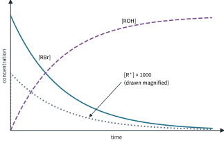
The steady-state idea has a qualitative meaning for you: whenever an intermediate is very reactive, the rate of the whole reaction is the rate at which that intermediate is made.
The nucleophile
A nucleophile and a base both donate a lone pair, but to different things, and we measure them differently.
The nucleophile is in the rate-determining step of SN2 only. So only SN2 rates depend on the nucleophile; an SN1 rate does not, because the nucleophile arrives after the slow step. (The nucleophile still decides which product an SN1 reaction gives.)
Rules for nucleophile strength (same substrate, same conditions):
- A charged nucleophile beats its neutral partner: OH− > H2O; CH3O− > CH3OH; NH2− > NH3. The anion has more electron density to offer and is attracted to the Cδ+.
- For the same attacking atom, the stronger base is usually the stronger nucleophile: OH− > CH3COO− > H2O. In ethanoate the negative charge is spread over two O atoms, so each O has less to offer.
- Bulky groups round the attacking atom slow it down: the tert-butoxide ion, (CH3)3CO−, is a strong base but a poor nucleophile, because its three CH3 groups stop it from reaching the back of a carbon atom. It can still reach an H on the outside of a molecule (Part 2 uses this).
- Down Group 17, I− > Br− > Cl− as nucleophiles in water and alcohols.3
Further example. Sodium iodide in propanone converts a chloro- or bromoalkane into the iodoalkane by SN2, e.g. 1-bromobutane → 1-iodobutane (NaI in propanone). NaI dissolves in propanone but NaBr and NaCl do not, so they precipitate, and this pulls the reaction over to the iodoalkane.
The leaving group
Both mechanisms break the C–X bond in their rate-determining step, so the leaving group affects the rate of both SN1 and SN2.
For the halogens the order is the one you met in Topic 11.1 Part 3, R–I > R–Br > R–Cl ≫ R–F, now with numbers (relative rates are literature values, rounded):
| X | C–X bond energy / kJ mol−1 (Data Booklet) | relative rate of SN2 (literature) | comment |
|---|---|---|---|
| I | 240 | about 3 | weakest bond; I− the most stable anion |
| Br | 280 | 1 | |
| Cl | 340 | about 0.02 | |
| F | 485 | negligible | strongest bond; F− a poor leaving group |
The two explanations point the same way here: the weakest C–X bond breaks most easily, and I− is the weakest base of the four halide ions (HI is the strongest of the hydrogen halides as an acid, Topic 10), so it is the most stable once it has left.
OH− is a poor leaving group: it is a strong base. That is why an alcohol does not react with Br− on its own.
Further example: protonated alcohols. With HBr, the O of the alcohol is first protonated; then the leaving group is H2O, a neutral molecule and a very weak base, so it is a good leaving group. For 2-methylpropan-2-ol:
(CH3)3COH + H+ ⇌ (CH3)3COH2+
(CH3)3COH2+ → (CH3)3C+ + H2O (slow)
(CH3)3C+ + Br− → (CH3)3CBr (fast)
Substituent effects
The groups on the carbon that is attacked change the two mechanisms in opposite directions.
SN2: steric hindrance
In SN2 the nucleophile must reach the back of the carbon, opposite the leaving group. Alkyl groups on that carbon (and on the next carbon) block the way (Fig 6), and the crowded, five-group transition state is also raised in energy. Each extra CH3 slows SN2 a lot.
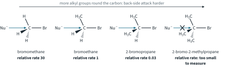
Further example: a primary halide that hardly reacts. 1-Bromo-2,2-dimethylpropane, (CH3)3CCH2Br, is primary, yet its SN2 reaction is about 105 times slower than that of bromoethane (relative rates about 10−5 against 1; literature values). The bulky (CH3)3C group on the next carbon blocks the back of the CH2. It cannot react by SN1 either, because that would need a primary carbocation, and it has no β-hydrogen, so it cannot eliminate by E2 (Part 2).
SN1: carbocation stability
In SN1 the rate is set by the ionisation step, so it depends on how stable the carbocation is. Two effects stabilise a carbocation:
- the inductive effect (Topic 11.1 Part 3): alkyl groups push electron density through the σ bonds towards the positive carbon;
- hyperconjugation (new here): a filled C–H σ bond on a neighbouring carbon can turn into line with the empty p orbital of C+ and overlap with it sideways (Fig 7(a)). Its electrons spread a little into the empty orbital, and the positive charge is spread over more atoms.
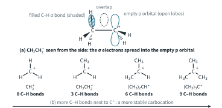
The more C–H bonds on the carbons next to C+, the more hyperconjugation: CH3+ has 0, CH3CH2+ has 3, (CH3)2CH+ 6 and (CH3)3C+ 9 (Fig 7(b)). So the order of stability is
tertiary > secondary > primary > methyl
and, because the ionisation step is endothermic with a late, carbocation-like transition state (worked example 1), a more stable carbocation means a lower Ea and a faster SN1.
Fig 8 shows the two trends side by side.
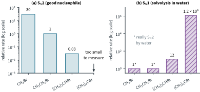
Worked example 3: substituent effects
Put CH3Br, CH3CH2Br, (CH3)2CHBr and (CH3)3CBr in order of (a) SN2 rate and (b) SN1 rate, and explain each order.
(To answer, you have to ask what each mechanism needs.) (a) SN2 needs back-side attack, so fewer groups on the carbon is faster: CH3Br > CH3CH2Br > (CH3)2CHBr > (CH3)3CBr (relative rates 30, 1, 0.03 and too small to measure; literature values). (b) SN1 needs a stable carbocation, so more alkyl groups is faster: (CH3)3CBr > (CH3)2CHBr > CH3CH2Br ≈ CH3Br (relative rates 1.2 × 106, 12, 1 and 1 for solvolysis in water; literature values). The tertiary cation has 9 C–H bonds for hyperconjugation and three alkyl groups for the inductive effect, the secondary 6 and two. The small values for CH3Br and CH3CH2Br are really SN2 by water: their carbocations are far too unstable to form, so these numbers set only an upper limit for SN1.
The two orders run in opposite directions. That is the key to the competition between SN1 and SN2 ("SN1 against SN2" below).
Further example: benzyl and allyl cations. (Chloromethyl)benzene, C6H5CH2Cl, and 3-chloropropene, CH2=CHCH2Cl, are primary, but they react by SN1 much faster than other primary halides (and by SN2 fast too). Their carbocations, C6H5CH2+ (benzyl) and CH2=CHCH2+ (allyl), are stabilised by delocalisation of the positive charge into the π system (Fig 9). Worked example 5 uses the same idea.
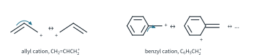
Stereochemistry: inversion, racemisation and ion pairs
SN2: inversion
Because the nucleophile comes in from the back, SN2 always gives inversion of configuration (Fig 10).4 Starting from (R)-2-bromobutane with hydroxide ions (NaOH(aq), heat, high [OH−]) gives (S)-butan-2-ol.
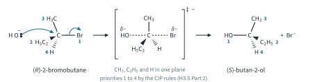
Be careful with the letters. "Inversion" is about geometry: the three groups are turned inside out. Whether the letter R or S changes depends on the priorities. In 2-bromobutane, Br > C2H5 > CH3 > H; in butan-2-ol, O > C2H5 > CH3 > H. The OH takes the place of Br as priority 1 but on the opposite face, so here the letter changes. The same is true with cyanide (KCN in ethanol, heat): (R)-2-bromobutane gives (S)-2-methylbutanenitrile, because the CN carbon, carrying (N,N,N), outranks the C2H5 carbon, carrying (C,H,H).
SN1: racemisation, and ion pairs
In Topic 11.5, (S)-3-bromo-3-methylhexane was hydrolysed by SN1 to a 50 : 50 mixture of (R)- and (S)-3-methylhexan-3-ol: the planar carbocation is attacked equally from both faces, so a single enantiomer gives a racemic mixture. Careful experiments show that SN1 usually gives slightly more of the inverted product. The reason is the ion pair (Fig 11).
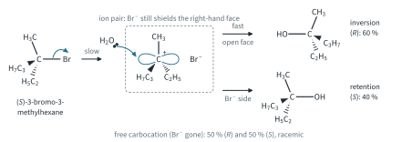
Just after the C–Br bond breaks, the Br− ion is still next to the face of the carbocation it has just left: the carbocation and the anion form an ion pair. If a water molecule (or OH−) arrives while the ion pair is still together, it can reach the open face more easily than the face shielded by Br−. Attack on the open face gives inversion. So:
- a carbocation that is attacked quickly, while it is still an ion pair, gives an excess of the inverted product;
- the more stable and longer-lived the carbocation, the more time Br− has to drift away before the nucleophile arrives, and the closer the result is to 50 : 50.
Worked example 4: stereochemistry of SN2 and SN1
(a) Give the configuration of the alcohol formed from (R)-2-bromobutane by SN2. (b) In one experiment (illustrative), (S)-3-bromo-3-methylhexane (H2O, warm) gave 60 % of one enantiomer of 3-methylhexan-3-ol and 40 % of the other. Which enantiomer is in excess, and what is the enantiomeric excess?
(a) SN2 inverts the carbon, and OH takes the place of Br as priority 1: (S)-butan-2-ol (Fig 10).
(To answer (b), find which product comes from the open face first.) Attack from the open face, opposite the departing Br−, gives the inverted product: from the (S)-bromide this is (R)-3-methylhexan-3-ol, 60 %; attack on the shielded face gives the retained (S)-alcohol, 40 %. Using H3.5 Part 2,
ee = (60 − 40) / (60 + 40) × 100 = 20 % in favour of (R)
so the optical purity of the product is 20 %. A free carbocation would have given 50 : 50 and an ee of 0.
SN1 against SN2
Which mechanism a substitution follows depends on several factors at once.
- The substrate. Methyl and primary: SN2 (no stable carbocation; little hindrance). Tertiary: SN1 (SN2 is blocked; the carbocation is stable). Secondary: either, decided by the other factors. Benzyl and allyl halides can do both.
- The nucleophile. A strong nucleophile at high concentration favours SN2, because it appears in the SN2 rate equation only. A weak, neutral nucleophile (H2O, an alcohol) leaves SN1 as the only practical route for a substrate that can form a stable carbocation.
- The leaving group. A good leaving group speeds up both, so on its own it does not decide between them.
- The solvent. Solvent effects are not required (see footnote 3).
Worked example 5: SN1 and SN2 at the same time
(1-Bromoethyl)benzene, C6H5CH(Br)CH3 (racemic), is a secondary halogenoalkane whose carbocation is stabilised by the benzene ring (the Further example on benzyl and allyl cations in "Substituent effects"). With OH− in a water–propanone mixture at 25 °C, OH− is in large excess, so [OH−] stays constant in each run and the rate of formation of 1-phenylethanol = kobs[RBr] (a pseudo-first-order rate constant, Topic 8). If SN1 and SN2 run side by side,
rate = k1[RBr] + k2[RBr][OH−] so kobs = k1 + k2[OH−]
Use the data (illustrative) to find k1 and k2, and the percentage of product formed by SN2 at [OH−] = 0.050 and 0.150 mol dm−3.
| [OH−] / mol dm−3 | 0.000 | 0.025 | 0.050 | 0.100 | 0.150 |
|---|---|---|---|---|---|
| kobs / 10−4 s−1 | 1.00 | 1.50 | 2.00 | 3.00 | 4.00 |
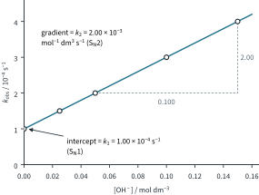
(To answer, plot kobs against [OH−].) The points lie on a straight line (Fig 12). The intercept is the SN1 part, which does not depend on [OH−]: k1 = 1.00 × 10−4 s−1. The gradient is the SN2 part:
k2 = (4.00 − 1.00) × 10−4 / 0.150 = 2.00 × 10−3 mol−1 dm3 s−1
At [OH−] = 0.050 mol dm−3, the SN2 term is 2.00 × 10−3 × 0.050 = 1.00 × 10−4 s−1 out of kobs = 2.00 × 10−4 s−1:
SN2 share = (2.00 × 10−3 × 0.050) / (2.00 × 10−4) × 100 = 50 %
At 0.150 mol dm−3: 3.00 / 4.00 × 100 = 75 % by SN2. A higher concentration of a strong nucleophile pushes a borderline substrate towards SN2. (Water also attacks the carbocation; the SN1 route gives the same alcohol.)
The two mechanisms side by side:
| SN2 | SN1 | |
|---|---|---|
| Steps | one (concerted) | two: ionisation (slow), then attack (fast) |
| Rate equation | rate = k[RX][Nu−] | rate = k[RX] |
| Order | second order overall | first order overall; zero order in Nu− |
| Molecularity | bimolecular | unimolecular |
| Energy profile | one hump | two humps, the first higher |
| Intermediate | none (a transition state only) | a planar carbocation, at a steady state |
| Stereochemistry | inversion | racemisation, with a little extra inversion (ion pairs) |
| Substrate | methyl > primary > secondary; never tertiary | tertiary > secondary; benzyl, allyl |
| Nucleophile | strong, high concentration; it sets the rate | weak is enough; it does not affect the rate |
| Bulky groups on the carbon | slow it down (steric hindrance) | speed it up (more stable carbocation) |
| Carbocation stability | irrelevant | crucial (Hammond: late transition state) |
Summary
- Hammond postulate: a transition state resembles the stable species nearest to it in energy. Endothermic step: late, product-like, so stabilising the product lowers Ea.
- SN2: one step, back-side attack, five-group transition state, rate = k[RX][Nu−], inversion; methyl > primary > secondary (steric hindrance).
- SN1: slow ionisation to a planar carbocation, then fast attack; carbocation at a steady state; rate = k[RX]; racemisation with a little extra inversion from ion pairs; tertiary > secondary (inductive effect and hyperconjugation).
- The nucleophile matters only to SN2 (charged > neutral; stronger base, stronger nucleophile; bulky is slow); the leaving group to both (a weak base leaves best: I− > Br− > Cl− ≫ F−; sulfonates excellent; OH− poor).
Additional information
- Beyond the syllabus: a carbocation can sometimes rearrange to a more stable one by moving an H atom or a CH3 group from the next carbon. This is not in 9813, and none of the examples in this chapter rearranges. ↩
- Beyond the syllabus: the mathematical treatment (setting the rate of change of [R+] equal to zero) is not required in 9813. It also shows that if Br− recaptured some carbocations, adding extra Br− would slow the reaction (the common-ion effect). ↩
- Beyond the syllabus: solvent effects are not required in 9813. In brief: polar protic solvents (water, alcohols) solvate ions strongly and favour SN1; polar aprotic solvents (propanone, DMSO) leave anions less solvated and favour SN2. The order I− > Br− > Cl− holds in water and alcohols, where the small Cl− ion is the most strongly solvated. ↩
- This is sometimes called the Walden inversion, after Paul Walden, who discovered it in 1896. ↩